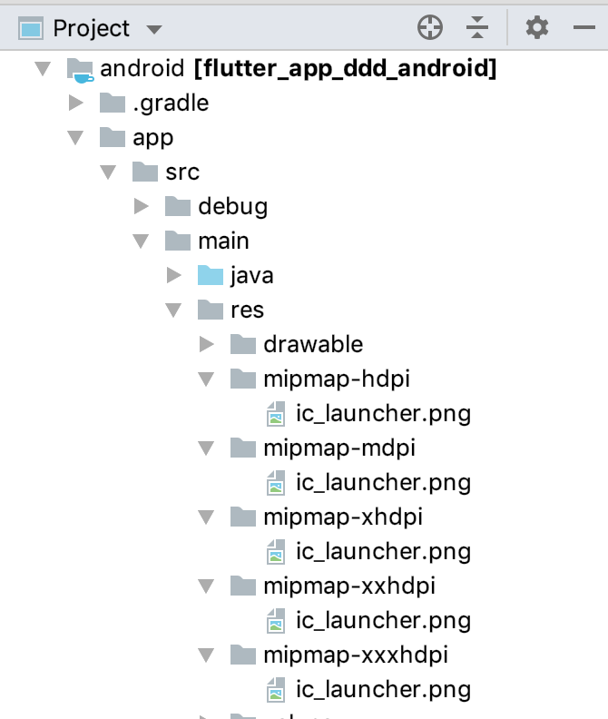
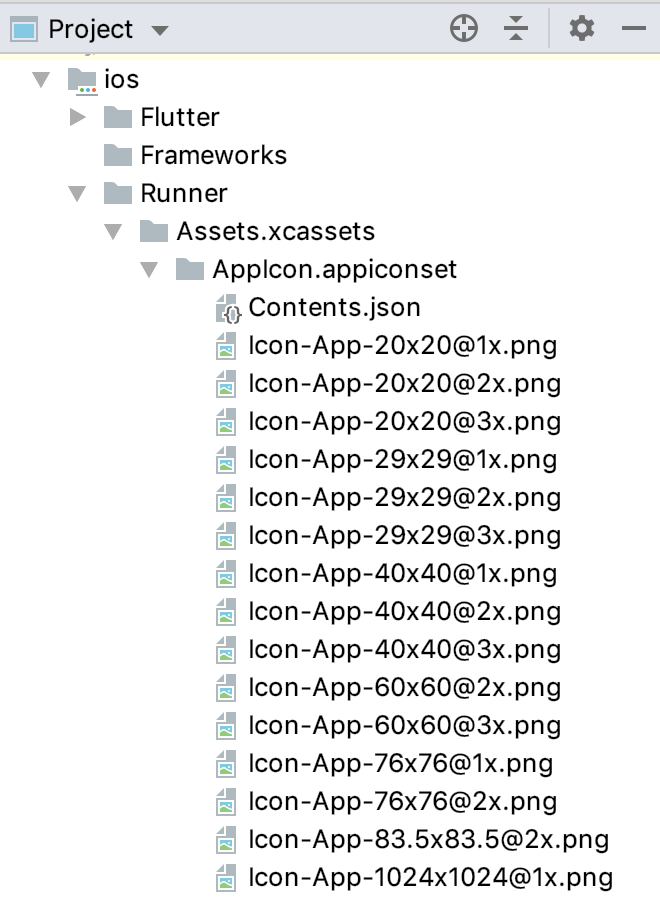
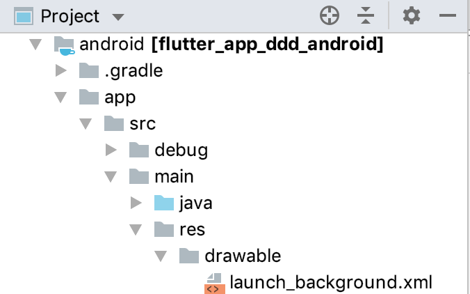
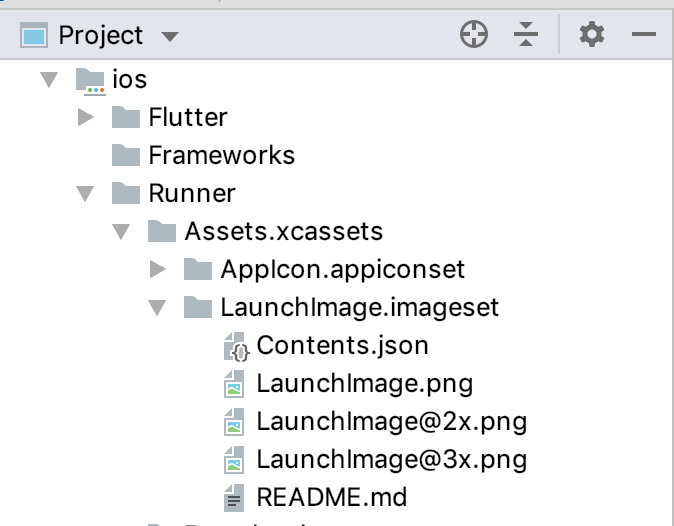

- 00 开篇词 为什么每一位大前端从业者都应该学习Flutter？.md.html
- 01 预习篇 · 从0开始搭建Flutter工程环境.md.html
- 02 预习篇 · Dart语言概览.md.html
- 03 深入理解跨平台方案的历史发展逻辑.md.html
- 04 Flutter区别于其他方案的关键技术是什么？.md.html
- 05 从标准模板入手，体会Flutter代码是如何运行在原生系统上的.md.html
- 06 基础语法与类型变量：Dart是如何表示信息的？.md.html
- 07 函数、类与运算符：Dart是如何处理信息的？.md.html
- 08 综合案例：掌握Dart核心特性.md.html
- 09 Widget，构建Flutter界面的基石.md.html
- 10 Widget中的State到底是什么？.md.html
- 11 提到生命周期，我们是在说什么？.md.html
- 12 经典控件（一）：文本、图片和按钮在Flutter中怎么用？.md.html
- 13 经典控件（二）：UITableView_ListView在Flutter中是什么？.md.html
- 14 经典布局：如何定义子控件在父容器中排版的位置？.md.html
- 15 组合与自绘，我该选用何种方式自定义Widget？.md.html
- 16 从夜间模式说起，如何定制不同风格的App主题？.md.html
- 17 依赖管理（一）：图片、配置和字体在Flutter中怎么用？.md.html
- 18 依赖管理（二）：第三方组件库在Flutter中要如何管理？.md.html
- 19 用户交互事件该如何响应？.md.html
- 20 关于跨组件传递数据，你只需要记住这三招.md.html
- 21 路由与导航，Flutter是这样实现页面切换的.md.html
- 22 如何构造炫酷的动画效果？.md.html
- 23 单线程模型怎么保证UI运行流畅？.md.html
- 24 HTTP网络编程与JSON解析.md.html
- 25 本地存储与数据库的使用和优化.md.html
- 26 如何在Dart层兼容Android_iOS平台特定实现？（一）.md.html
- 27 如何在Dart层兼容Android_iOS平台特定实现？（二）.md.html
- 28 如何在原生应用中混编Flutter工程？.md.html
- 29 混合开发，该用何种方案管理导航栈？.md.html
- 30 为什么需要做状态管理，怎么做？.md.html
- 31 如何实现原生推送能力？.md.html
- 32 适配国际化，除了多语言我们还需要注意什么_.md.html
- 33 如何适配不同分辨率的手机屏幕？.md.html
- 34 如何理解Flutter的编译模式？.md.html
- 35 Hot Reload是怎么做到的？.md.html
- 36 如何通过工具链优化开发调试效率？.md.html
- 37 如何检测并优化Flutter App的整体性能表现？.md.html
- 38 如何通过自动化测试提高交付质量？.md.html
- 39 线上出现问题，该如何做好异常捕获与信息采集？.md.html
- 40 衡量Flutter App线上质量，我们需要关注这三个指标.md.html
- 41 组件化和平台化，该如何组织合理稳定的Flutter工程结构？.md.html
- 42 如何构建高效的Flutter App打包发布环境？.md.html
- 43 如何构建自己的Flutter混合开发框架（一）？.md.html
- 44 如何构建自己的Flutter混合开发框架（二）？.md.html
- 特别放送 温故而知新，与你说说专栏的那些思考题.md.html
- 结束语 勿畏难，勿轻略.md.html
- 捐赠
17 依赖管理（一）：图片、配置和字体在Flutter中怎么用？
你好，我是陈航。
在上一篇文章中，我与你介绍了Flutter的主题设置，也就是将视觉资源与视觉配置进行集中管理的机制。
Flutter提供了遵循Material Design规范的ThemeData，可以对样式进行定制化：既可以初始化App时实现全局整体视觉风格统一，也可以在使用单子Widget容器Theme实现局部主题的覆盖，还可以在自定义组件时取出主题对应的属性值，实现视觉风格的复用。
一个应用程序主要由两部分内容组成：代码和资源。代码关注逻辑功能，而如图片、字符串、字体、配置文件等资源则关注视觉功能。如果说上一次文章更多的是从逻辑层面分享应该如何管理资源的配置，那今天的分享则会从物理存储入手与你介绍Flutter整体的资源管理机制。
资源外部化，即把代码与资源分离，是现代UI框架的主流设计理念。因为这样不仅有利于单独维护资源，还可以对特定设备提供更准确的兼容性支持，使得我们的应用程序可以自动根据实际运行环境来组织视觉功能，适应不同的屏幕大小和密度等。
随着各类配置各异的终端设备越来越多，资源管理也越来越重要。那么今天，我们就先看看Flutter中的图片、配置和字体的管理机制吧。
资源管理
在移动开发中，常见的资源类型包括JSON文件、配置文件、图标、图片以及字体文件等。它们都会被打包到App安装包中，而App中的代码可以在运行时访问这些资源。
在Android、iOS平台中，为了区分不同分辨率的手机设备，图片和其他原始资源是区别对待的：
- iOS使用Images.xcassets来管理图片，其他的资源直接拖进工程项目即可；
- Android的资源管理粒度则更为细致，使用以drawable+分辨率命名的文件夹来分别存放不同分辨率的图片，其他类型的资源也都有各自的存放方式，比如布局文件放在res/layout目录下，资源描述文件放在res/values目录下，原始文件放在assets目录下等。
而在Flutter中，资源管理则简单得多：资源（assets）可以是任意类型的文件，比如JSON配置文件或是字体文件等，而不仅仅是图片。
而关于资源的存放位置，Flutter并没有像Android那样预先定义资源的目录结构，所以我们可以把资源存放在项目中的任意目录下，只需要使用根目录下的pubspec.yaml文件，对这些资源的所在位置进行显式声明就可以了，以帮助Flutter识别出这些资源。
而在指定路径名的过程中，我们既可以对每一个文件进行挨个指定，也可以采用子目录批量指定的方式。
接下来，我以一个示例和你说明挨个指定和批量指定这两种方式的区别。
如下所示，我们将资源放入assets目录下，其中，两张图片background.jpg、loading.gif与JSON文件result.json在assets根目录，而另一张图片food_icon.jpg则在assets的子目录icons下。
assets
├── background.jpg
├── icons
│ └── food_icon.jpg
├── loading.gif
└── result.json
对于上述资源文件存放的目录结构，以下代码分别演示了挨个指定和子目录批量指定这两种方式：通过单个文件声明的，我们需要完整展开资源的相对路径；而对于目录批量指定的方式，只需要在目录名后加路径分隔符就可以了：
flutter:
assets:
- assets/background.jpg #挨个指定资源路径
- assets/loading.gif #挨个指定资源路径
- assets/result.json #挨个指定资源路径
- assets/icons/ #子目录批量指定
- assets/ #根目录也是可以批量指定的
需要注意的是，目录批量指定并不递归，只有在该目录下的文件才可以被包括，如果下面还有子目录的话，需要单独声明子目录下的文件。
完成资源的声明后，我们就可以在代码中访问它们了。在Flutter中，对不同类型的资源文件处理方式略有差异，接下来我将分别与你介绍。
对于图片类资源的访问，我们可以使用Image.asset构造方法完成图片资源的加载及显示，在第12篇文章“经典控件（一）：文本、图片和按钮在Flutter中怎么用？”中，你应该已经了解了具体的用法，这里我就不再赘述了。
而对于其他资源文件的加载，我们可以通过Flutter应用的主资源Bundle对象rootBundle，来直接访问。
对于字符串文件资源，我们使用loadString方法；而对于二进制文件资源，则通过load方法。
以下代码演示了获取result.json文件，并将其打印的过程：
rootBundle.loadString('assets/result.json').then((msg)=>print(msg));
与Android、iOS开发类似，Flutter也遵循了基于像素密度的管理方式，如1.0x、2.0x、3.0x或其他任意倍数，Flutter可以根据当前设备分辨率加载最接近设备像素比例的图片资源。而为了让Flutter更好地识别，我们的资源目录应该将1.0x、2.0x与3.0x的图片资源分开管理。
以background.jpg图片为例，这张图片位于assets目录下。如果想让Flutter适配不同的分辨率，我们需要将其他分辨率的图片放到对应的分辨率子目录中，如下所示：
assets
├── background.jpg //1.0x图
├── 2.0x
│ └── background.jpg //2.0x图
└── 3.0x
└── background.jpg //3.0x图
而在pubspec.yaml文件声明这个图片资源时，仅声明1.0x图资源即可：
flutter:
assets:
- assets/background.jpg #1.0x图资源
1.0x分辨率的图片是资源标识符，而Flutter则会根据实际屏幕像素比例加载相应分辨率的图片。这时，如果主资源缺少某个分辨率资源，Flutter会在剩余的分辨率资源中选择最接近的分辨率资源去加载。
举个例子，如果我们的App包只包括了2.0x资源，对于屏幕像素比为3.0的设备，则会自动降级读取2.0x的资源。不过需要注意的是，即使我们的App包没有包含1.0x资源，我们仍然需要像上面那样在pubspec.yaml中将它显示地声明出来，因为它是资源的标识符。
字体则是另外一类较为常用的资源。手机操作系统一般只有默认的几种字体，在大部分情况下可以满足我们的正常需求。但是，在一些特殊的情况下，我们可能需要使用自定义字体来提升视觉体验。
在Flutter中，使用自定义字体同样需要在pubspec.yaml文件中提前声明。需要注意的是，字体实际上是字符图形的映射。所以，除了正常字体文件外，如果你的应用需要支持粗体和斜体，同样也需要有对应的粗体和斜体字体文件。
在将RobotoCondensed字体摆放至assets目录下的fonts子目录后，下面的代码演示了如何将支持斜体与粗体的RobotoCondensed字体加到我们的应用中：
fonts:
- family: RobotoCondensed #字体名字
fonts:
- asset: assets/fonts/RobotoCondensed-Regular.ttf #普通字体
- asset: assets/fonts/RobotoCondensed-Italic.ttf
style: italic #斜体
- asset: assets/fonts/RobotoCondensed-Bold.ttf
weight: 700 #粗体
这些声明其实都对应着TextStyle中的样式属性，如字体名family对应着 fontFamily属性、斜体italic与正常normal对应着style属性、字体粗细weight对应着fontWeight属性等。在使用时，我们只需要在TextStyle中指定对应的字体即可：
Text("This is RobotoCondensed", style: TextStyle(
fontFamily: 'RobotoCondensed',//普通字体
));
Text("This is RobotoCondensed", style: TextStyle(
fontFamily: 'RobotoCondensed',
fontWeight: FontWeight.w700, //粗体
));
Text("This is RobotoCondensed italic", style: TextStyle(
fontFamily: 'RobotoCondensed',
fontStyle: FontStyle.italic, //斜体
));

图1 自定义字体
原生平台的资源设置
在前面的第5篇文章“从标准模板入手，体会Flutter代码是如何运行在原生系统上的”中，我与你介绍了Flutter应用，实际上最终会以原生工程的方式打包运行在Android和iOS平台上，因此Flutter启动时依赖的是原生Android和iOS的运行环境。
上面介绍的资源管理机制其实都是在Flutter应用内的，而在Flutter框架运行之前，我们是没有办法访问这些资源的。Flutter需要原生环境才能运行，但是有些资源我们需要在Flutter框架运行之前提前使用，比如要给应用添加图标，或是希望在等待Flutter框架启动时添加启动图，我们就需要在对应的原生工程中完成相应的配置，所以下面介绍的操作步骤都是在原生系统中完成的。
我们先看一下如何更换App启动图标。
对于Android平台，启动图标位于根目录android/app/src/main/res/mipmap下。我们只需要遵守对应的像素密度标准，保留原始图标名称，将图标更换为目标资源即可：

图2 更换Android启动图标
对于iOS平台，启动图位于根目录ios/Runner/Assets.xcassets/AppIcon.appiconset下。同样地，我们只需要遵守对应的像素密度标准，将其替换为目标资源并保留原始图标名称即可：

图3 更换iOS启动图标
然后。我们来看一下如何更换启动图。
对于Android平台，启动图位于根目录android/app/src/main/res/drawable下，是一个名为launch_background的XML界面描述文件。

图4 修改Android启动图描述文件
我们可以在这个界面描述文件中自定义启动界面，也可以换一张启动图片。在下面的例子中，我们更换了一张居中显示的启动图片：
<?xml version="1.0" encoding="utf-8"?>
<layer-list xmlns:android="http://schemas.android.com/apk/res/android">
<!-- 白色背景 -->
<item android:drawable="@android:color/white" />
<item>
<!-- 内嵌一张居中展示的图片 -->
<bitmap
android:gravity="center"
android:src="@mipmap/bitmap_launcher" />
</item>
</layer-list>
而对于iOS平台，启动图位于根目录ios/Runner/Assets.xcassets/LaunchImage.imageset下。我们保留原始启动图名称，将图片依次按照对应像素密度标准，更换为目标启动图即可。

图5 更换iOS启动图
总结
好了，今天的分享就到这里。我们简单回顾一下今天的内容。
将代码与资源分离，不仅有助于单独维护资源，还可以更精确地对特定设备提供兼容性支持。在Flutter中，资源可以是任意类型的文件，可以被放到任意目录下，但需要通过pubspec.yaml文件将它们的路径进行统一地显式声明。
Flutter对图片提供了基于像素密度的管理方式，我们需要将1.0x，2.0x与3.0x的资源分开管理，但只需要在pubspec.yaml中声明一次。如果应用中缺少对于高像素密度设备的资源支持，Flutter会进行自动降级。
对于字体这种基于字符图形映射的资源文件，Flutter提供了精细的管理机制，可以支持除了正常字体外，还支持粗体、斜体等样式。
最后，由于Flutter启动时依赖原生系统运行环境，因此我们还需要去原生工程中，设置相应的App启动图标和启动图。
思考题
最后，我给你留下两道思考题吧。
- 如果我们只提供了1.0x与2.0x的资源图片，对于像素密度为3.0的设备，Flutter会自动降级到哪套资源？
- 如果我们只提供了2.0x的资源图片，对于像素密度为1.0的设备，Flutter会如何处理呢？
你可以参考原生平台的经验，在模拟器或真机上实验一下。
欢迎你在评论区给我留言分享你的观点，我会在下一篇文章中等待你！感谢你的收听，也欢迎你把这篇文章分享给更多的朋友一起阅读。
© 2019 - 2023 Liangliang Lee. Powered by gin and hexo-theme-book.